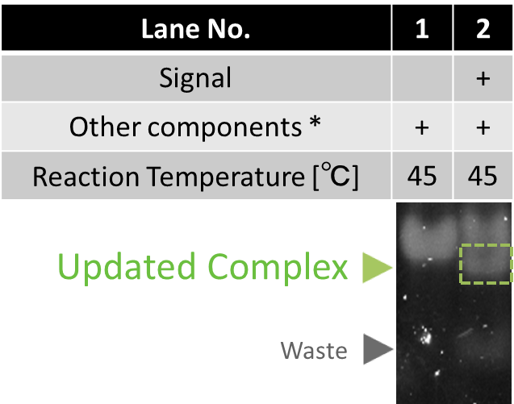

Experiment
Experimental results of electrophoresis and other chemical observation methods proved functionality of our devices. This page explains the experimental results of Enzymatic device and Enzyme-free device, both of which include detailed analyses of elementary reactions.
Enzymatic device
Functionality
2-instruction operation
Enzymatic device releases different Outputs in order by the information on Input. It was proved by two experimental results of electrophoresis (Fig.1) using two types of Inputs (A then B, B then A). Both Output-A and B were tagged with TAMRA, also the lengths of these two Outputs were different. We conducted quantitative analyses of the band intensity of Outputs. Following graphs show the ratio of Outputs in the total intensity of 2 bands (Transducer, Output) on each lane.

Fig.1 Time evolution of Outputs with Input-AB and Input-BA
All enzymes and DNAs (Transducer, Gate) were mixed at 45 ℃ , then the reactions started when Input was added. Reaction times were 0, 1/6, 1/2, 1, 2, 5, 10, 12, 15, 20, 25, 30, 40 min. After the reaction, the solution was heated up to 80 ℃ to stop enzymatic activities, then annealed again. The lengths of Output-A and Output-B is 20 mer and 25 mer, respectively.
These experimental results proves that our device properly released Outputs in order. The order of Outputs was controlled by the Input sequence. Both graphs show that saturated time of the first and the second Output was 2 and 20 minutes, respectively. More than 90 % of Outputs were released from Transducer.
Detailed experimental conditions are given in Materials and Methods
3-instruction operation
In the following experiment, we confirmed that our device properly released 3 Outputs by Input coding "A then B then C" and "C then A then B" .
Output-C is also modified with TAMRA and has a different length from Output-A and B. Following plot shows the ratio of Outputs in the total intensity of 2 bands (Transducer, Output) on each lane.

Fig.2 Time evolution of Outputs with Input-ABC and Input-CAB.
All enzymes and DNAs (Transducer, Gate) were mixed at 45 ℃. The reaction started when Input was added. Reaction times were 0, 1/6, 1/2, 1, 2, 5, 10, 12, 15, 20, 22, 25, 30, 35, 40, 45, 50, 60 min. After the reaction, temperature was heated up to 80 ℃ to stop enzymatic activities, then annealed again. The lengths of Output-A, Output-B, and Output-C are 20 mer, 25 mer, and 35 mer, respectively.
Our device was able to release 3 Outputs in correct order. The saturation time of the first, second, and third Output were 2, 20, and 40 min, respectively. In the discussion page, we compare this result with the simulation.
Detailed experimental conditions are given in Materials and Methods
Testing elementary processes

Reading process
This process produces Signal when Input, Template, polymerase, nickase, and dNTP are all mixed together in the same solution.
The result of electrophoresis is shown in Fig.3. The band of Signal appeared in lane2 and lane3 by polymerase and nickase. It shows reading process works properly at 37 ℃ ~45 ℃ .
Detailed experimental conditions are given in Materials and Methods
* Other components polymerase, nickase, and dNTP.
Releasing process

In this process, Signal hybridizes with the toehold of Transducer and then initiates polymerization, resulting in releasing Output.
The result of electrophoresis is shown in Fig.4. Output did not appear in lane1 where Signal was not applied. Under the presence of Signal, Output appeared (lane2 and 3). From the result, we conclude that Releasing process works properly at 37 ℃ ~ 45 ℃ .
Detailed experimental conditions are given in Materials and Methods
Fig.4 Confirmation of Releasing process
* Other components include Output Transducer, polymerase, and dNTP.
Updating process

In this process, Signal hybridizes with the toehold of Gate. It initiates polymerization, resulting in releasing of Updater. Then, recognition sequence is formed by the hybridization between Updater and Input. Meanwhile, restiction enzyme (EcoRI) cleaves the Input.
The result of electrophoresis is shown in Fig.5. In lane1 and 2, we verified that Updated complex and Waste were generated when Signal was applied.
Detailed experimental conditions are given in Materials and Methods
* Other components include Input, Gate, polymerase, EcoRI, and dNTP.
Reaction speed measurement
Here, we evaluated the speed of releasing the first Output. The release of the first Output (Output-A) by Input-AB, was confirmed by a gel shift assay. Output-A is modified with fluorescent molecule TAMRA. Before stained by SYBR Gold, bands repesenting structures that contains Output-A (Output-A, Transducer-A) were observed.

Fig.6 Result of electrophoresis to confirm the first output releasing (before SYBR Gold staining)
All lanes include Input-A/Template complex, Transducer-A, polymarase, and nickase.
Fluorescent intensity of Output increased until it was saturated around 10 minutes.

Fig.7 Result of electrophoresis to confirm the first output releasing (after SYBR Gold staining)
When reaction time was over 20 minutes, band of Signal emerged in Fig.7, because Output was released by excess amount of Signal. This result indicate that one cycle of the Enzymatic device takes at most 20 minutes.
Detailed experimental conditions are given in Materials and Methods
Enzyme-free device
Functionality
To confirm the functionality of the Enzyme-free device, we have designed the following experiments. The first experiment measures the intensity of Output-A modified with fluorescencent molecule FAM. We prepared Input-AB and Input-BA. The order of releasing is changed depending on the Inputs. Fig.8 shows the time development of Output-A.

Fig.8 The intensity of FAM measured by spectrofluorometer.
The fluorescence wavelength of FAM was 520nm. For quantitative analysis, the highest and lowest intensity datas were defined as 100% and 0 %, respectively.
The plot indivates that Output-A was released slower when it was coded in the second section. Therefore, this result shows our device released Output based on the order on Input. The time difference between the first and the second releasing was about 40 minutes. We discuss this result along with simulation in Discussion page.
Experimental conditions are given in Materials and Methods
Testing elementary reactions
We checked the function of one Seesaw gate by fluorescence measurement and electrophoresis.
Measurement of fluorescence
We quantify Output released from Transducer. We prepared a DNA strand modified with quencher molecule BHQ-1 that hybridizes with Output.
Input-AB was used. The final concentration of all components (Input, Transducer, Gate, and Trigger) were 100nM.
Time evolution of fluorescence is shown in Fig.9. We added Trigger into the solution at 0 [s].

Fig.9 Time evolution of Output-A measured by spectrofluorometer
We defined fluolescence intentensity as 0 and 100% when the FAM was and was not quenched, respectively. After adding Trigger, fluorescence increased gradually. The increase of fluorescence stopped increasing around 1700sec. About a half of Output strands were released.
Detailed experimental conditions are given in Materials and Methods
Electrophoresis
We also confirmed the function of the Seesaw gate by electrophoresis. The result of electrophoresis is shown in Fig.10.

Fig.10 Confirmation of Seesaw gate by electrophoresis
We evaluted the raito of each bands intensity among total intensity of corresponding lane.
Two bands appeared on lane1 and lane3. The upper band is Transducer, and the lower one is Output. The fluorescence intensity of Output in lane1 with Trigger was stronger than that of lane3. The intensity of Output increased by 83.0% while that of Transducer decreased by 83.0% when Trigger was added. From this result, we conclude that Output was released by adding Trigger.
Detailed experimental conditions are given in Materials and Methods